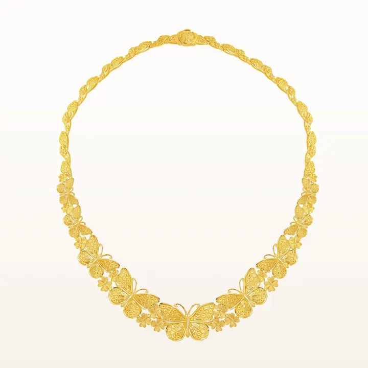

白銀鑑定：冰塊、硝酸與重量
白銀鑑定有個「廚房妙招」——冰塊放上去，溶得快的才是真銀。

核心定義
白銀鑑定四招：① 看印記（925/999）；② 掂密度（10.5）；③ 冰塊導熱（銀是導熱之王，冰塊快速融化）；④ 硝酸測試（銀的反應特徵）。銀的高導熱性，讓「冰塊測試」成為最特別的快篩。
銀飾保養：銀會氧化變黑（硫化）——日常用軟布擦拭、專用銀布/銀水清潔、存放用密封袋。變黑是銀的天性，保養是銀飾的日常。
特徵與分類
| 測試 | 方法 | 判斷 |
|---|---|---|
| 印記 | 925/999 | 標準標示 |
| 密度 | 10.5 g/cm³ | 壓手 |
| 冰塊 | 導熱快 | 快速融化 |
| 硝酸 | 銀反應特徵 | 區分銅/鎳 |
| 磁鐵 | 不吸磁 | 排除鐵 |
「銀水」（銀器清潔液）含硫化物/氰化物成分——浸泡後銀恢復光亮，但可能傷到其他金屬（寶石鑲嵌要取下）。日常保養：軟布乾擦最安全，黑斑嚴重再上銀水。
科學原理
銀的導熱係數是所有金屬之最——冰塊放上銀器的瞬間，熱量快速傳導，冰塊「嘶」地融化。這是有科學依據的「廚房鑑定法」：導熱慢的銅、鎳合金，冰塊溶得慢。
硝酸測試：銀遇硝酸生成硝酸銀（無色溶液、可復原）；銅遇硝酸生成藍綠色溶液；鎳遇硝酸無明顯反應——溶液顏色是「身份證」。硝酸腐蝕性強，僅限專業使用。
鑑定與鑑別方法
- 看印記：925/999
- 掂密度：10.5
- 冰塊導熱：快速融化
- 硝酸測試（專業）：溶液顏色
- XRF：無損定論
市場行情與保養建議
市場現況：銀飾造假以「銅鎳合金鍍銀」為主——鍍銀磨損處露銅色是破綻；「925 印記」也有偽造。銀飾價格親民（按銀價＋工藝費），異常低價＋重鍍層＝警惕。
選購：認 925 印記與店家信譽；銀飾的「設計」是價值核心（材料成本有限）；投資銀條銀幣看溢價與回購——銀是「親民貴金屬」。
常見誤區
銀氧化變黑（硫化銀）是正常化學——真銀才變黑。鍍銀/仿品反而不易黑。「變黑」是銀的真身分證。
銀可碰水，但要避免：硫化物（溫泉、泳池）、化妝品、汗液長時間殘留——這些加速變黑。勤擦乾，銀飾常保亮。
冷知識
所有金屬中銀的導熱最好——冰塊測試的科學依據。銀器的「冰涼感」，是物理特性。
硫化銀是黑色薄膜——拋光或化學還原（鋁箔＋小蘇打）可恢復。銀的「黑」，是可逆的。
反直覺觀點
銀器（餐具、飾品）曾是貴族與中產的財富象徵——「silver」代表「銀器/餐具」的文化。便宜，曾是它的歷史標籤。
過度用力擦拭會刮傷銀面——正確是「輕拭＋正確清潔」。保養過度，比不保養更傷銀。